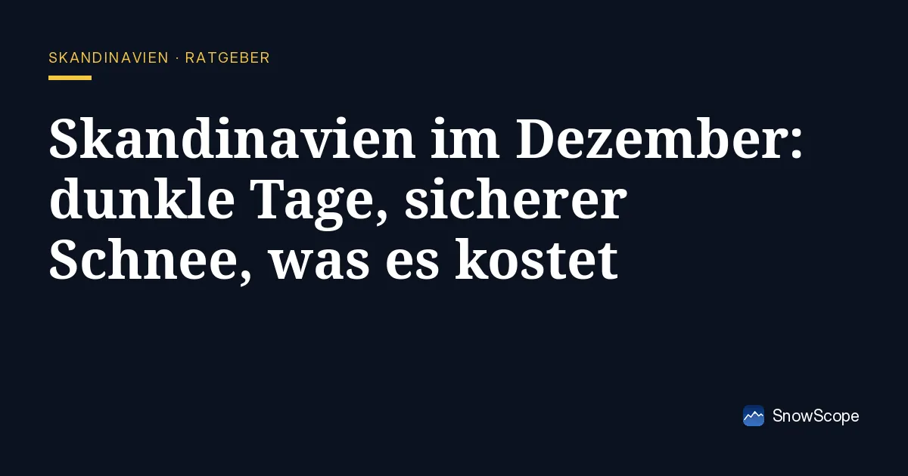
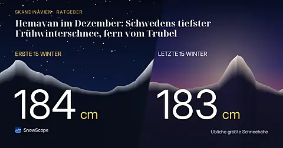

Skandinavien im Dezember: dunkle Tage, sicherer Schnee, was es kostet
Der Dezember in Skandinavien bringt kalte Gewissheit und schwaches Licht. In Mittelhöhe in der gesamten Region erreicht die Schneetiefe in fast jedem Winter 30 cm oder mehr – von 83 % bei Levi und Ylläs bis 100 % bei Hemavan. Der Haken: kurze Tage, starke Preisschwankungen nach Datum in Norwegen und Schweden und ein Nord-Süd-Unterschied bei der Zuverlässigkeit.
Die Live-Schneeprognose für Scandinavia in December in der SnowScope-AppSchneehöhen, Pulverschnee-Alarme und 3D-Karte, gratis.
Wo die Chancen für dich sprechen
Wenn du in Mittelhöhe fährst, ist Skandinavien verlässlich. Hemavan, Hemsedal, Oppdal und Geilo erreichen in 96–100 % der Dezember-Wochen in Mittelhöhe 30 cm oder mehr – über 46 Winter hinweg. Hemavan führt bei der Tiefe: 82 cm ist typisch am 15. Dezember in Mittelhöhe. Die schwedischen und finnischen Mittelhöhen folgen: Ylläs 38 cm (Durchschnitt über das gesamte tiefe Gebiet), Hemanvans untere Hänge 82 cm, Hemsedals Mittelzone 70 cm.
Tiefere Höhen und südliche Gebiete sind riskanter. Sälen, das tiefste und südlichste schwedische Gebiet, erreicht in nur 48 % der Dezember-Wochen in Mittelhöhe 30 cm oder mehr. Idre Fjäll schafft 65 %, Åre 89 %. Das Muster ist klar: fahre höher oder weiter nördlich für Winter-Sicherheit.

Weihnachtswoche versus früher Dezember
Früher Dezember ist im Süden ein Glücksspiel. Bei Sälens Mittelhöhe hatten nur 48 % der Winter am 15. Dezember in der Woche 15.–21. Dezember 30 cm. Warte. Die Weihnachtswoche (22.–28. Dezember) ist viel sicherer: 61 % der Winter brachten 30 cm bei Sälen dann, und 98 % bei Hemsedals Mittelhöhe und 98 % bei Geilo. Nördliche Gebiete wie Hemavan bleiben konstant: 100 % in beiden Wochen in Mittelhöhe.
Auf dem Gipfel über alle Gebiete hinweg ist der Dezember praktisch garantiert. Hemanvans Spitze (1136 m) hatte in 100 % der Dezember- und Weihnachtswochen 30 cm oder mehr. Plane eine Reise in den frühen Dezember nach Norden oder in die Höhe; plane eine Weihnachtswoche-Reise überall hin.
Das Höhenwetten: Talstation gegen Gipfel
Steile Gebiete zwingen dich zu einer Wahl. Hemsedal fällt 800 m von Gipfel zu Talstation; Hemavan 674 m; Oppdal 742 m. An der Talstation in Mitteldezember fällt die Schnee-Zuverlässigkeit stark ab. Hemsedals Tal (640 m) erreicht in nur 57 % der Dezember-Wochen in Mittelhöhe 30 cm; sein Gipfel (1439 m) erreicht es in 100 %. Opdals Talstation (585 m) schafft 93 %, aber auch das ist nicht sicher. Flachere Gebiete mit weniger Höhenunterschied – Sälen, Idre Fjäll, Levi, Ruka – vermeiden diesen Unterschied, starten aber insgesamt tiefer.
Die Weihnachtswoche verringert die Lücke. Bei Hemsedals Talstation erreichten 65 % der Winter 30 cm oder mehr in der Weihnachtswoche, verglichen mit 57 % in Mitteldezember. Plane Talfahrten für Weihnachten; plane Mittelhöhe für jede Dezember-Woche.
Langzeittrends: der Norden bleibt stabil
Über die letzten 15 Winter (2011–12 bis 2025–26) hielten nördliche Gebiete ihren Schnee. Hemanvans Weihnachtswochen lieferten in 100 % der Winter in Mittelhöhe 30 cm; Levi in 100 %; Hemsedal in 100 %; Ylläs in 100 %. Oppdal und Ruka schafften beide 93 %. Aber südliche tiefe Gebiete wurden schwächer. Sälens Weihnachtswochen sanken auf 47 % der Winter mit 30 cm in Mittelhöhe, verglichen mit höheren Anteilen im vollständigen 46-Winter-Datensatz. Idre Fjäll liegt bei 60 %.
Diese Verschiebung ist wichtig für die Planung. Wenn du flexibel bist, buche Norden oder Höhe. Wenn du im Dezember unbedingt im Süden fahren musst, wähle die Weihnachtswoche und buche eine Fahrt in Höhenlage.
Preise: Finnland fest, Norwegen und Schweden flexibel
Finnland gibt Festpreise an und hält sich daran. Levi berechnet EUR 60 pro Tag (oder EUR 57 bei Online-Buchung 14 Tage vorher), Ylläs EUR 60 (EUR 55,50 bis 11. Dezember), Ruka EUR 58 pro Tag oder EUR 265 für 6 Tage. Du kannst ein Budget planen und mit Sicherheit buchen.
Norwegen und Schweden nutzen dynamische Preise nach Datum. Geilo zeigt NOK 590 (etwa EUR 56 zum Wechselkurs vom 12. November), aber Trysil, Hemsedal, Hafjell, Oppdal, Åre, Sälen, Idre Fjäll und Hemavan geben auf ihren Online-Shops keine Festpreise an. Buche früh und online; vermeide die Weihnachtsferienwoche, wenn die Kosten wichtig sind.
Tageslicht: plane um die Dunkelheit herum
Das Dezember-Tageslicht schrumpft, je weiter du nach Norden gehst. Südnorwegen und Südschweden haben noch ein paar Stunden echtes Tageslicht; Finnisches Lappland tritt in die Polarnacht ein. Levi und Ylläs liegen im Dunkeln einen Teil des Dezember, wenn die Sonne nicht über dem Horizont aufgeht. Das ist beeindruckend, aber kalt, und es verkürzt die Fahrzeit stark. Starte vor der Dämmerung, wenn du Nachmittagslicht willst; trag dicke Funktionsunterwäsche und Handwärmer; erwarte, dass Hänge gefroren bleiben.
Gebiete in Mittelhöhe in Zentralnorwegen und Schweden sind besser dran. Geilo, Oppdal und Hemsedal haben mehr Tageslicht als der äußerste Norden, aber immer noch weit weniger als im Sommer. Plane deine besten Fahrten vor dem Mittag und nehme den Lift hinab, wenn es dunkler wird.
Tipps für Skifahrer
- Für einen Festpreis, den du kalkulieren kannst, wähle Finnland: Levi, Ylläs und Ruka geben Tages- und Mehrtageskarten ohne Überraschungen an.
- In Norwegen und Schweden kaufe Liftpässe online und buche früh; Preise ändern sich mit dem Datum und sind in der Weihnachtsferienwoche am höchsten.
- Wähle Mittelhöhe oder höher für Dezember-Sicherheit; Talfahrten sind in der Weihnachtswoche sicherer als früher im Dezember.
- In südlichen Gebieten (Sälen, Idre Fjäll, Åre) warte bis zur Weihnachtswoche; nördliche Gebiete (Hemavan, Ylläs, Levi) sind von früh im Dezember an zuverlässig.
- Dezember-Tage sind kurz: starte beim ersten Licht, iss Mittag schnell, und prüfe die nationale Lawinenvorhersage, bevor du bei Dunkelheit abseits der Piste fährst.
Zu diesen Zahlen
Die Schneehöhen der Skigebiete sind der meiste Schnee in den oberen Hängen am angegebenen Tag; es sind Schätzungen für eine Fläche, keine Messung an einem Punkt. Prognosen können sich ändern. Lies vor dem Freeriden immer den offiziellen Lawinenlagebericht.
Diesen Bericht zitieren
Für Forschung, Lehre oder Presse: Zahlen und Grafiken sind unter CC BY 4.0 mit dieser Quellenangabe frei nutzbar.
SnowScope (2026), Skandinavien im Dezember: dunkle Tage, sicherer Schnee, was es kostet, https://snowscope.app/blog/de/2026/11/scandinavia-december-skiing-dark-days-sure-snow-cost.html, abgerufen am 2026-11-14
SnowScope (Atlas Labs). (2026, November 14). Skandinavien im Dezember: dunkle Tage, sicherer Schnee, was es kostet. SnowScope snow reports. https://snowscope.app/blog/de/2026/11/scandinavia-december-skiing-dark-days-sure-snow-cost.html
BibTeX
@misc{snowscope2026scandinaviadecemberskiin,
author = {{SnowScope (Atlas Labs)}},
title = {Skandinavien im Dezember: dunkle Tage, sicherer Schnee, was es kostet},
year = {2026},
month = nov,
howpublished = {\url{https://snowscope.app/blog/de/2026/11/scandinavia-december-skiing-dark-days-sure-snow-cost.html}},
note = {Published 2026-11-14 13:29 UTC; accessed 2026-11-14}
}· CC BY 4.0 · Methoden, Daten und Werkzeuge →
Scandinavia in December folgen
Gratis: eine Nachricht, wenn Neuschnee kommt, und jeden Morgen die Vorhersage.
Weitere Schneeberichte

Am 15. Dezember zeigt Hemsedal 32 cm in der Talstation, 70 cm auf Mittelberg und 106 cm am Gipfel. Die Höhe ist entscheidend.

Hemavans Mittelhöhe hat am typischen 15. Dezember 82 cm Schnee. In allen 46 Wintern gab es Mitte Dezember 30 cm oder mehr. Daten vom 13. November 2026.